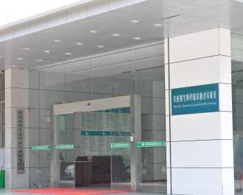

Position Available
We are looking for and welcome highly-motivated individuals interested in phage and superbacteria to join us!
开设课程：
经费支持：
- 高效裂解耐药大肠杆菌的非透膜剂依赖型噬菌体裂解酶作用机制研究，2021.1-2024.12，国家自然科学基金面上项目，主持
- 噬菌体多糖解聚酶介导的肠炎沙门氏菌生物被膜消除机制，2018.1-2021.12，国家自然科学基金面上项目，主持
- 猪链球菌2型内皮素转化酶的致病机制研究，2016.1-2018.12，国家自然科学基金青年科学基金项目，主持
- 耐药梭菌噬菌体高效裂解酶的发掘和作用机制研究，2019.1-2020.12，湖北省科技创新专项（中美合作专项），主持
- 湖北地区小龙虾中副溶血弧菌污染状况和污染机制研究，2015.1-2016.12，湖北省自然科学基金，主持
- 重要食源性致病菌耐药机制及传播规律研究，2018.1-2021.12，国家重点研发计划，研究骨干

通讯地址：
lijinquan@mail.hzau.edu.cn